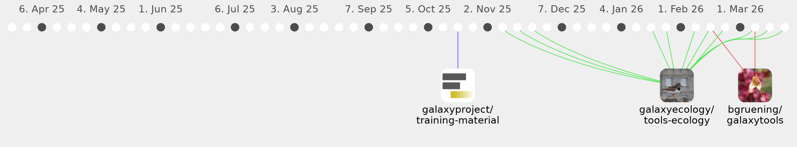

TuturBaba

Commits all-time: 68
Commits last year: 68

(60)
- 5693bf9
- b15bf21
- 492803f
- 470dfbd
- 54008d5
- 2f97906
- 98384eb
- 7488bde
- 5953c9e
- 0b794fd
- 2e4f27f
- 40fcd82
- b896537
- 71e3b55
- 78ff000
- 7d87871
- c4f1fed
- 7585821
- 768a324
- ac38bb5
- 4e2231f
- 700e4da
- 3541803
- 7298ae0
- a04f882
- 4f04e35
- ef1a857
- 0d0de38
- 70dbd5a
- 40ae093
- 56bcbf2
- ee4514e
- 401f902
- 5e5ec79
- e7b74a8
- d35457a
- 2f7cd83
- 6e4f476
- 12f59d5
- c1a1362
- 61799da
- 16d9a69
- 5368f74
- ecb9f13
- b5a99c9
- 9d28832
- f0243b0
- 74b82f1
- 415aae9
- 8bf3e96
- a5c9c1c
- e6e46d6
- 6ce31d6
- 06dfe56
- 72a2b02
- 8eed86d
- d2f70a2
- cc5d9a9
- 7b696f5
- 50da591
(6)
(2)